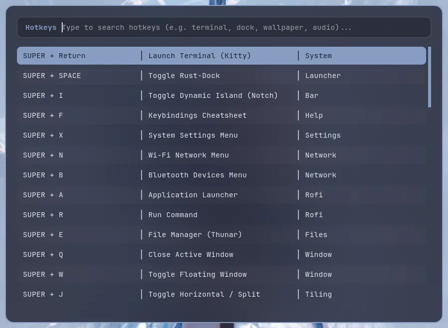
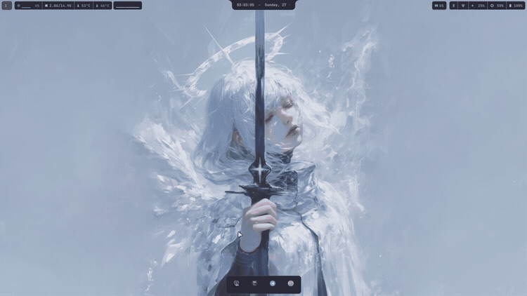
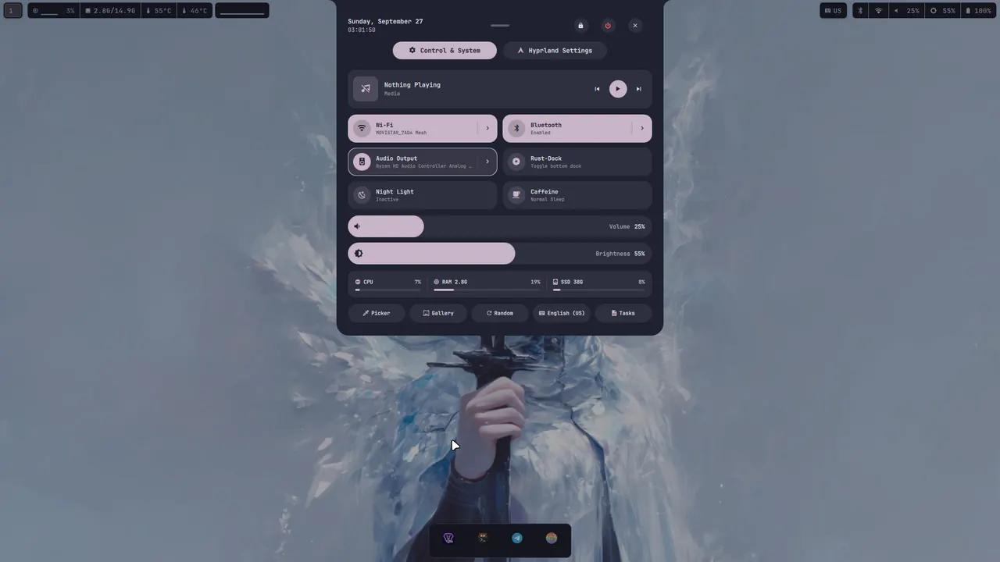
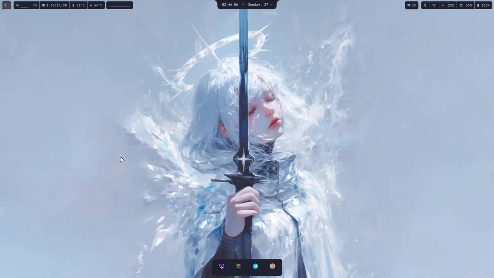
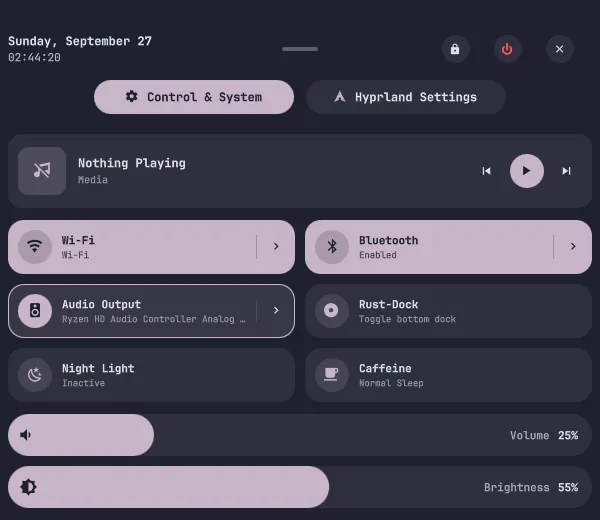
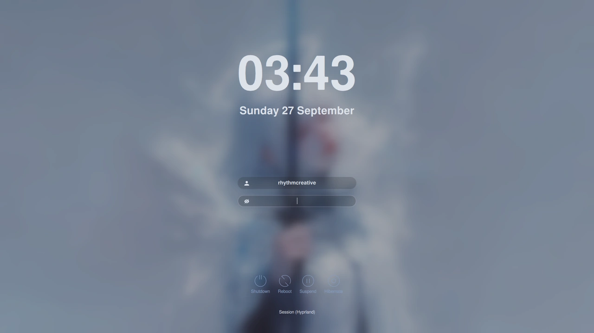
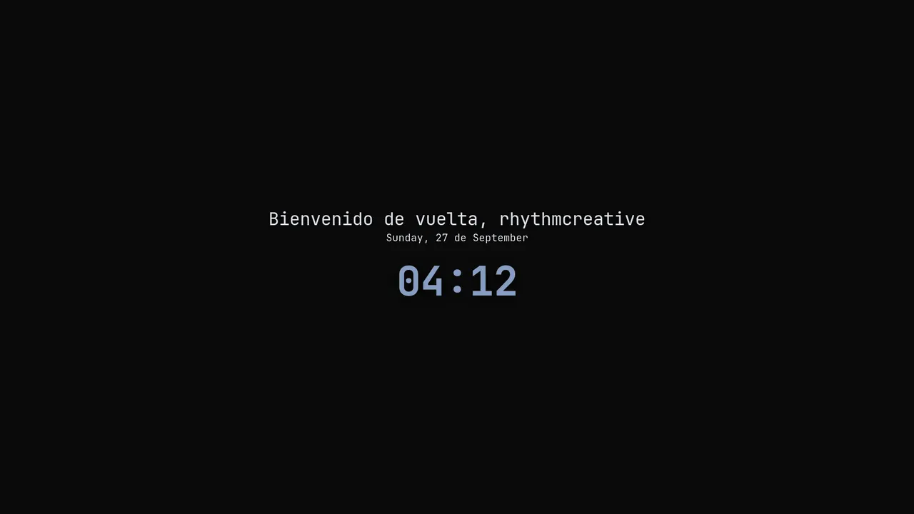

hyprland
The installer, the config, and every piece of the desktop, written from the repository.
rhythmcreative/hyprlandThe whole desktop, piece by piece: what each thing is, what it does, and what to do when it stops working. Written from the repository, not from memory.
The installer, the config, and every piece of the desktop, written from the repository.
rhythmcreative/hyprlandThe installer, the config, and every piece of the desktop, written from the repository.
rhythmcreative/hyprlandOne line, and it works.
bash -c "$(curl -fsSL --connect-timeout 10 --max-time 60 https://raw.githubusercontent.com/rhythmcreative/hyprland/main/install.sh)"-u--updateUpdate existing installation (sync configs, helpers, & packages)-y--yesAssume yes to all prompts (unattended mode)--preview--dry-runSimulate installation workflow without system changes--no-rebootDo not prompt or execute reboot upon completion--minimalMinimal desktop core stack only (skip optional applications)--wallpapersWallpaper download mode: all, random, none--skip-wallpapersSkip downloading wallpaper packs--gpuGPU driver stack: nvidia, amd, intel, auto, none--skip-gpuSkip GPU driver detection and setup--skip-rust-dockSkip building rust-dock from source--skip-flatpaksSkip Flatpak package installation--skip-appsSkip optional application selection menu--sddmSet SDDM (Astronaut theme) as default display manager--no-sddm--skip-sddmKeep existing display manager without setting SDDM--replace-configs-allDirectly overwrite existing configs without .bak backups--resumeContinue an interrupted install: steps already done are skipped, and configs that are already identical to the repo are left alone instead of being backed up and overwritten-h--helpShow this help message and exit17 flags, read from install.sh --help. The README only lists 12 of them.

79 keybindings, parsed from hyprland.lua on v0.25. Read from the repository, not from a running compositor, so this is the list a fresh install gets.
Two panels, and the login screen only on one of them.
16 components, read from the README.


The strip on the top edge. Quickshell, and every part of it is a plugin.
The strip along the bottom edge. Ours, in Rust and GTK4, compiled during the install.


The status bar at the top of the screen. Powered by Waybar, styled to match the active Pywal wallpaper palette automatically.
Everything lives in ~/.config/waybar/config.jsonc and ~/.config/waybar/style.css. Custom module scripts reside in scripts/waybar/ and can be tweaked without breaking the base layout.
The wallpaper decides the colours, and everything else follows.
Sixteen colours, read out of the wallpaper.

SDDM, with its own theme, and only on the built-in panel.
It says what is broken instead of failing quietly.
rhythm-doctor: check (repo: ~/hyprland) ok /etc/sddm/Xsetup is up to date ok xsetup.conf.disabled is present (X11 stays off, correct) ok all deployed units point at real executables ok scripts referenced by the units are present SDDM greeter: wrapper: correct template: correct sddm.conf: correct login cursor: correct theme: correct Xsetup (X11 fallback): correct cursor theme 'Bibata-Modern-Ice' is installed OK ok battery-limit.conf in ~/.local/state ok no local edits in .config/hypr doctor: everything correct.
The installer is not a one-shot script. There is a second half to it: the update, the overlays, and what happens to the files you have edited.
Updating used to overwrite anything you had edited in ~/.config, leaving a dated .bak beside it. Two trees exist now: the base is re-laid in full on every update, and your edits live in a sparse overlay applied last, so they win without opting out of upstream fixes.
The repository is mostly a pile of scripts with nothing to compile, which is why installing it takes one command and not a build system. Almost all of it lands in ~/.local/bin, which is already on your PATH, so a script is installed by being copied and made executable.
The files that are not yours are the ones under /etc and /usr: the login screen has to be written as root, so those go in a directory under sddm/ and a deploy script copies them into place. Editing them by hand works until the next update, which puts them back.
Counted from the repository, hiding dotfiles and __pycache__. Listing all 129 scripts would be a table nobody reads top to bottom.

Start here before changing anything. Most of what looks broken is one file that drifted, and rhythm-doctor usually says which.
Hyprland needs a GPU and a Wayland session, so it does not run on Android or iOS. This desktop is on the laptop. What follows is what does and does not cross over.
On a touchscreen laptop — not a phone, a laptop with a screen you can touch — the bar is handled properly. It matches on (hover: none) and then gives every control a 44 px target instead of the 28 px it gives a mouse, and moves the clock up in size so it is the thing you can read from an arm's length away. It is the only part of the desktop that was built with a finger in mind.